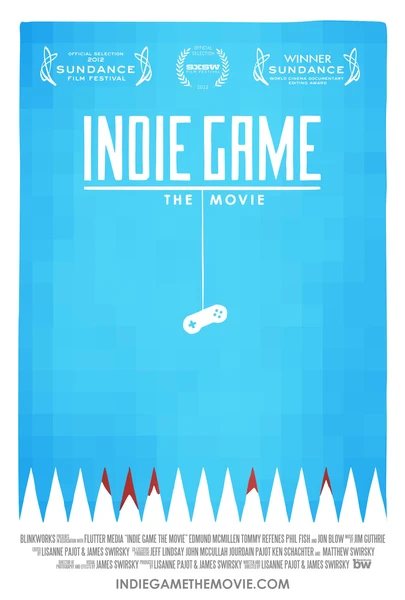

Документальный · 2012 · Инди
Документальный фильм о независимых разработчиках игр и цене творчества на грани разорения. Человеческая история «геймдева» и его отчаяния.
A documentary about indie game developers and the price of creativity on the edge of ruin. The human side of game dev and its struggles.
← Вернуться в каталог IT Movies